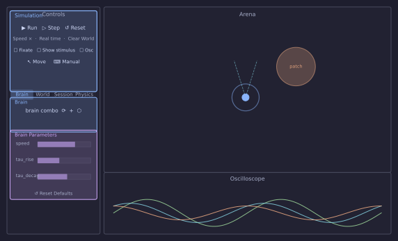

Tour of the Simulator
This page is a reference for every panel and control in the window. Other tutorials link here instead of re-explaining where things are.
Launching
The window opens with the robot centred in an empty arena. Nothing moves until you press Run.
Window layout

| Area | Default position | Can be… |
|---|---|---|
| Arena | Centre | Fixed |
| Controls | Left dock | Detached, resized |
| Oscilloscope | Bottom dock | Detached, resized |
Arena
The main simulation view. The robot is the filled circle with sensor rays. Gradient patches appear as coloured halos; solid objects as filled circles.
Navigating
Scroll to zoom. Middle-click-drag to pan. The arena resets its view when you press Reset.
Trail
The robot's path is drawn as a fading line. Toggle it with the Trail checkbox in the World tab; adjust its length with the Len spinner next to it.
Controls panel
The left dock. Contains a Simulation group at the top followed by four tabs: Brain, World, Session, Physics.
Simulation group
All simulation controls live in one group with no sub-sections.
| Control | What it does |
|---|---|
| ▶ Run / ■ Stop | Start or stop the simulation loop. The status bar shows RUNNING or STOPPED. |
| ⏭ Step | Advance exactly one physics tick while stopped — useful for frame-by-frame inspection. |
| ↺ Reset | Stop and return the robot to its start position and heading. Brain state is cleared; world patches are not. |
| Speed × | How many physics ticks run per render frame. Higher values speed up exploration; very high values can make physics unstable. |
| Real time | Run only as many ticks per frame as wall-clock time demands — keeps the simulation at 1× biological speed. |
| ✕ Clear World | Remove all patches, objects, and walls without touching the robot or brain. |
| Fixate | Freeze the robot's position. Physics and the brain still run — useful for probing sensor responses without the robot moving. |
| Show stimulus | Toggle gradient patches on/off. When off, sensors read zero even though patches remain visible. |
| Oscilloscope | Show or hide the Oscilloscope dock. |
| ↖ Move | Toggleable. While active, drag patches, objects, or the robot to a new position. Press again or Escape to exit. |
| ⌨ Manual | Drive the robot with the keyboard while the brain keeps running. W/S = forward/back, A/D = turn, Space = stop. |
Brain tab
Brain selector
A drop-down listing every Python file found in brains/. Select a brain to load it; the Brain Parameters group below updates to show its Params.
⟳ Reload
Re-imports the currently selected brain file from disk. Use this after editing the file — no need to restart the simulator. Brain state is reset as if you pressed Reset.
+ New network
Creates a new empty network JSON file and opens it in the Network visualizer. Only visible when the selected brain supports network files.
⬡ Network visualizer
Opens the network editor window, which shows the brain's layers and connections as an interactive graph. You can add layers, draw connections, and edit weight matrices live — changes take effect immediately without reloading.
Brain Parameters
Auto-generated from the brain's Param descriptors. Each slider controls one parameter in real time. The ↺ Reset Defaults button at the bottom restores all sliders to their coded defaults.
World tab
Trail
Enables or disables the position trail drawn in the Arena. The Len spinner sets how many past positions are kept (10–5000).
Arena shape
Square (default) — the robot bounces off four flat walls. Round — the arena is a circular boundary; bumpers trigger when the robot reaches the edge.
Gradient patches
Gradient patches are circular fields that sensors can detect. Each patch has a colour channel (A–F) and a spatial falloff.
To add a patch — click one of the letter buttons (A–F) then click a position in the Arena. A new patch appears at that location. { #add-patch }
Wall — adds a wall-proximity gradient that increases as the robot approaches any boundary. { #wall-patch }
To move a patch — enable ↖ Move and drag it. { #move-patch }
To delete a patch — enable ↖ Move, click the patch to select it, then press Delete. { #delete-patch }
Solid objects
Solid circles that the robot physically cannot pass through. Added the same way as gradient patches using the Z–U buttons. The robot's bumper sensors fire on contact.
Session tab
Sessions
Saves and loads the complete state of the world: gradient patches, objects, arena shape, simulation speed, and the current brain's parameter values. Sessions are stored as JSON files in configs/.
Name — the filename (without .json) for the next save.
Save — writes the current state to configs/<name>.json.
Load — the drop-down lists all saved configs; selecting one loads it immediately.
Task
A secondary selector for pre-defined evaluation scenarios. Select a task and press Apply to set up a standardised world layout.
Logger
Records sensor and motor data to a timestamped CSV file during a run.
● Record — starts logging. The label updates with the output path. ■ Stop — stops logging and closes the file.
Physics tab
Exposes the raw simulation parameters defined in SimConfig: dt, arena_scale, motor_gain, sense_radius, sensor_angle, body_radius, and others. Changing these takes effect on the next Reset.
Oscilloscope
A scrolling time-series plot docked at the bottom. It displays the variables returned by the active brain's plots() method. Each channel gets its own colour; the multiplier spinner next to each channel label scales the display amplitude.
To add signals to the oscilloscope, return their attribute names from plots() in your brain:
The oscilloscope samples the listed names after every loop() call.
Status bar
A thin bar at the very bottom of the window. Shows:
- ■ STOPPED or ● RUNNING — current simulation state.
- Step time and speed multiplier on the right, updated each render frame.